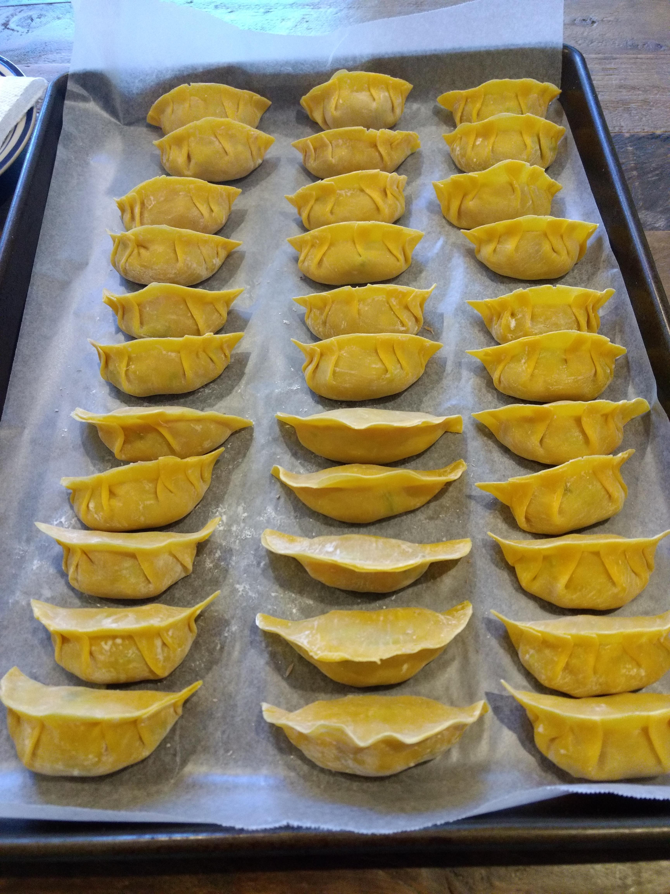
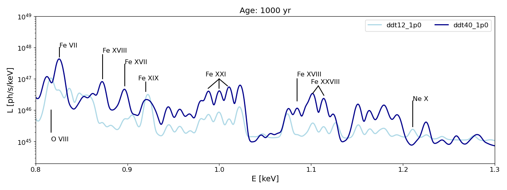
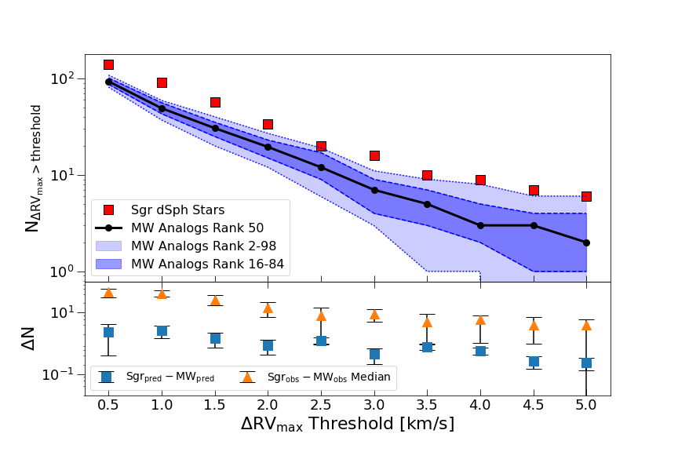

About Me


I am PhD candidate at the University of Pittsburgh studying supernova remnants using a Cosmic Ray,
Hydrodynamic, Non-Equilibrium Ionization code (ChN) and X-ray spectroscopy under the supervision of Dr. Carles Badenes.
My research focus is on studying Type Ia supernovae progenitor scenarios by
simulating supernova remnants in different circumstellar environments and comparing their spectra to observed Chandra spectra.
Outside of science, I love to cook, camp, and brew beer.
Education:
2021-Present: PhD in Physics from University of Pittsburgh
2019-2021: MS in Physics from University of Pittsburgh
2014-2018: BS in Physics from Allegheny College, Minor in Psychology
Publications:
ADS link
Research

Modeling the X-Ray Emission of Type Ia Supernova Remnants in Different Circumstellar Environments
I simulate supernova remnants while varying the circumstellar structure to create a grid of models.
Supernova remnants allow us to probe the interaction between the supernova ejecta and the ambient medium. Above is a simulated XRISM spectrum with uniform ambient medium density and different Type Ia explosion models.
I will be presenting a poster on this topic at the Supernova Remnants and Their Progenitors workshop in August.

Multiplicity Statistics of Stars in the Sagittarius Dwarf Spheroidal Galaxy: Comparison to the Milky Way
We compare the statistics of stars in the Sgr dSph to analogs from the MW by creating analog samples using a k-d tree selecting for relevant stellar properties. We find that the Sgr dwarf spheroidal has systematically
higher multiplicity than similar stars in the Milky Way.
Bonidie, Court, et al. 2022
Contact
Email: tac136@pitt.edu
Address: 3941 O'Hara St Office 300 Pittsburgh, PA 15213